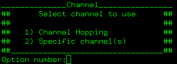

The scan option is the first step when using airoscript, this step is mandatory, except if you're going to use 7, 8, 9 or 10.
You'll have to choose what encryption filter will be used.
First option looks for all kind of networks
Second option looks only for open networks (not usefull at all)
And the next options are obvious.
First option scans on all channels, and second option allows you to enter a channel, multiple channels or a range.

Now, airodump will be called to scan for networks, and you'll see it on your default terminal.